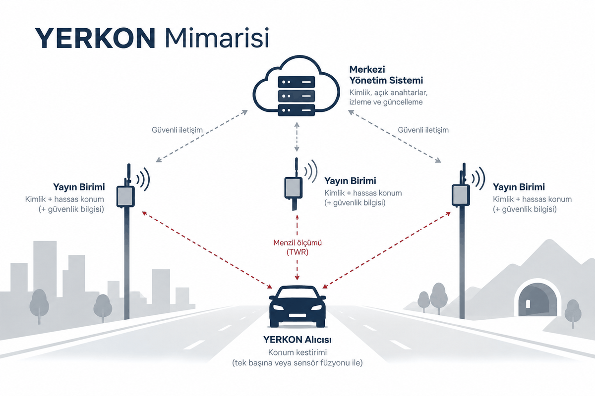

The architecture
Three parts: broadcast units standing at surveyed positions, receivers that work out their own position, and a management system that keeps the identities current.

Three parts
- The broadcast unit. A transmitter fixed to one point: a mast, a roadside unit, a communications site, or inside a tunnel. When a receiver asks, it broadcasts three things: who it is, the fixed position surveyed at installation, and the signature that shows neither is forged.
- The receiver. It goes in a vehicle or in a pocket. It combines the distances it measures to the units with the vehicle's own sensors: an inertial unit that measures movement, how far the wheels have turned, and the map. So it keeps giving a position with no satellite in sight. The simulation behind the table uses neither the inertial unit nor the wheels; only the ranges and the height from the map.
- The management system. It keeps the list of which unit holds which key. A receiver downloads that list and checks each unit's signature, so it never talks to a forged one.
Why two way ranging
Systems that look at how much later a signal reaches one unit than another (TDoA) may need precise network wide time synchronisation between the units, and the infrastructure to supply it, to reach the same accuracy. Going below a billionth of a second, for instance, means an atomic clock and IEEE 1588 PTP at roughly 100 000 lira a unit. Two way ranging needs no network wide synchronisation: the time the signal spends in the air comes out of one short there-and-back between the unit and the receiver.
Every radio chip counts time with its own crystal, and no two crystals run at exactly the same rate. In two way ranging that difference only turns into error over the short wait before the unit answers, and the receiver estimates it from the incoming signal and removes it. In the simulation what is left after that correction stays under 20 centimetres on one range.
Each unit keeps its own private key and hands its public key to the management system. The key is 256 bit ECC and the signature is ECDSA. A sequence number gives away an old message recorded and sent again later.
In TDoA, keeping the units' clocks equal to each other takes costly infrastructure such as an atomic clock and IEEE 1588 PTP at every unit. YERKON measures range two ways, so it needs no such synchronisation at all.
Three kinds of installation
- Urban. Many short range units: base station sites, traffic signs and lights, advertising boards, roadside lighting. For a 2,4 GHz LoRa module such as the Semtech SX1280 the maker states about ±1 m of ranging accuracy with clear line of sight. That is the accuracy of one distance between one unit and a receiver, not the final position error. Position error also depends on the units' geometry, on multipath and on obstruction, and is judged separately on HPE P50 and HPE P95.
- Open country. A few points with wide reach: intelligent transport and roadside units, base station sites, rail and road infrastructure; these are sparse, so in the simulation most units are on the electricity distribution poles along the road, with a solar panel and a battery. The equipment is certified as adaptive frequency hopping, which lifts the 2,4 GHz density limit and leaves 20 dBm of radiated power. The rural unit is the same board as the urban one: the amplified module (E28-2G4M20S) and an outdoor 5 dBi rod antenna. Its difference from the town unit is not the board but where it stands: with no buildings in the way the signal reaches much further, and poles with no mains carry a solar panel and a battery. YERKON takes 8 to 10 km as a communications and coverage target, and how accurately it ranges at that distance is to be confirmed by field trials. The Polatlı ground in the simulation is steppe with few buildings, so despite its 486 m of relief the rural row came out a little better than the urban one; where there is forest, steep ground or blocked sight, rural performance is expected to fall. The result is reported as HPE P50 and HPE P95.
- Critical areas. Tunnels, metro and station areas, ports and airports, disaster logistics areas. A 6,5 to 8 GHz UWB module such as the Qorvo DWM3000 is used where about 10 cm of ranging precision is the aim and the line of sight is clear. The final position error is not the same thing: it depends on geometry, calibration, multipath and obstruction, and is measured separately in field tests as HPE P50 and HPE P95.
Receiver modules
- Pedestrian. Designed to draw little power and fit in a pocket. It uses an SX1280 in town and in open country and a DWM3000 in tunnels and indoors. An ESP32-S3 connects it to a phone; if the signal drops, a BNO085 motion sensor carries on from the last position. A ceramic antenna for UWB, a chip antenna on the board for 2,4 GHz.
- Road vehicle. Built on an STM32 with an LCD map screen. It connects to the CAN bus of vehicles that support one and takes live data from the wheel speed sensors and the steering angle. Like the pedestrian module it carries both radios: an SX1280 for wide areas and a DWM3000 for critical ones. The DWM3000 uses its own on-board antenna; the SX1280 is the amplified module (E28-2G4M20S) with an outdoor 5 dBi rod antenna on the vehicle's roof.
- Internet of things. For robot fleets indoors and in half open areas. It talks directly to the common robot operating systems and keeps correcting its position from how far the wheels have turned and its own motion sensor. A DWM3000 is enough for most warehouse and factory work.
The hardware and its price
| Product | One | At a hundred | At a thousand |
|---|---|---|---|
| Urban and rural broadcast unit | 2049,79 TL | 1531,32 TL | 1381,83 TL |
| Critical area broadcast unit | 2276,48 TL | 1755,47 TL | 1680,26 TL |
| Pedestrian receiver | 3082,55 TL | 2586,76 TL | 2309,77 TL |
| Vehicle receiver | 4528,63 TL | 4069,88 TL | 3309,05 TL |
- Each product's price at one, a hundred and a thousand is the sum of its parts at their sellers' own tier prices: radio module, microcontroller, antenna, supply, protection, box, passives, printed board and assembly. The table prices at a thousand, because the operating model assumes a network of a thousand units. Every part, its seller and its price are on the Cost page.
- The prices cover every part of the board: the main parts, supply and protection, terminals, antenna cable, box, the passive components, the printed board and its assembly. Test, calibration, certification, tax and shipping are outside them; installation goes into the table as a line of its own.
- Both receivers carry an SX1280 and a DWM3000. That is what lets one unit range against urban units on the road and against tunnel units inside the bore, with nothing switched over.